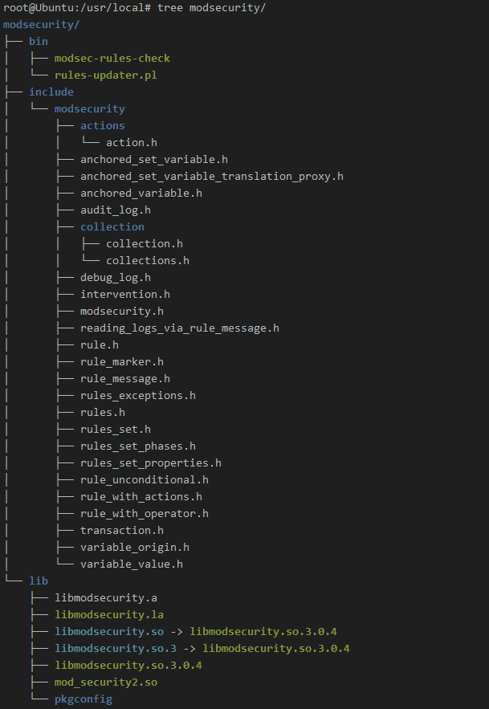
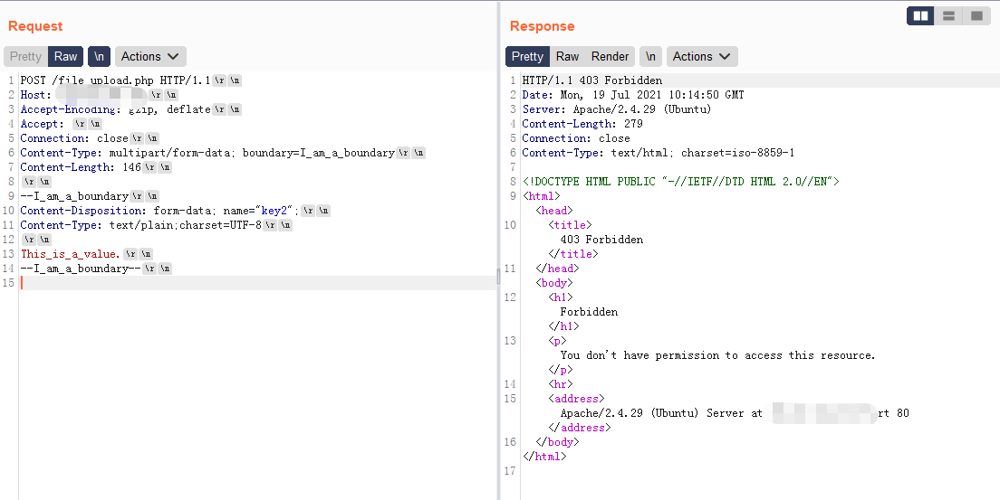
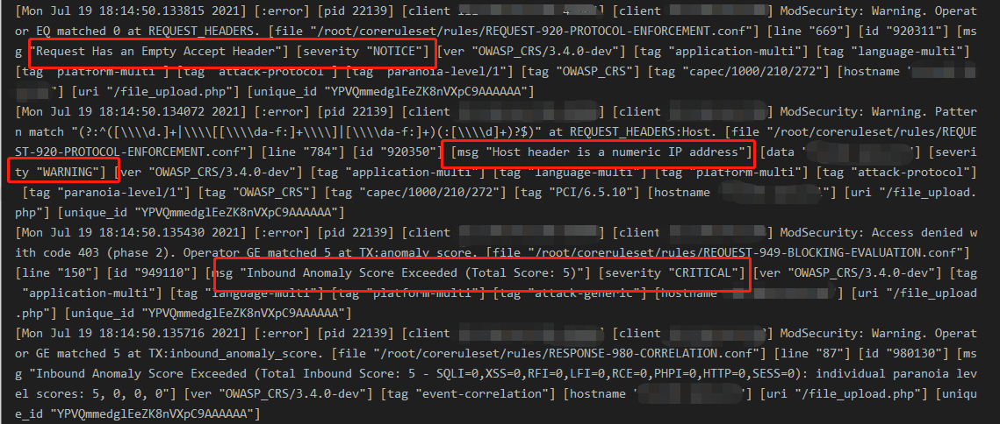

文章首发于奇安信攻防社区，链接https://forum.butian.net/share/258，原文有三部分，此处为完整版
简介
1. 介绍
ModSecurity 是一个 Web 应用程序防火墙 (WAF)，并且具有一个强大的持续维护的规则库，其有以下优点。
实时监控和攻击检测
实时监控 HTTP 流量以检测攻击，并且提供可自定义的日志记录功能。
预防攻击和虚拟补丁
可以拦截利用已知漏洞进行的攻击，并且可以打虚拟补丁，对于一些异常的行为可以对其ip等进行打分行为，从而跟踪行为，最终判定是否拦截。
灵活的规则引擎
CRS(coreruleset)是ModSecurity体系的核心，规则体系强大并且灵活，下文也将重点介绍其规则体系。
嵌入式模式部署
ModSecurity 是一个嵌入式 Web 应用程序防火墙，这样可以缩小性能开销，并且对于https流量也能直接处理。
基于网络的部署
可以部署在反向代理服务器上，用于保护后端服务。
可移植性
能够用在各种操作系统上。
安装
安装环境：Ubuntu18.04
1.1 Libmodsecurity
1 | apt-get install g++ flex bison curl doxygen libyajl-dev libgeoip-dev libtool dh-autoreconf libcurl4-gnutls-dev libxml2 libpcre++-dev libxml2-dev |
include/lib文件位置：/usr/local/modsecurity

1.2 Nginx-modsecurity
安装带有modsec模块的Nginx
1 | wget http://nginx.org/download/nginx-1.20.1.tar.gz |
添加规则并配置Nginx
1 | git clone https://github.com/coreruleset/coreruleset/ |
修改modsecurity.conf令其加载crs，增加两行
Include /root/coreruleset/crs-setup.conf
Include /root/coreruleset/rules/*.conf
需要直接进行拦截的话，修改SecRuleEngine
SecRuleEngine On
修改/usr/local/nginx/conf/nginx.con，使Nginx加载modsec并指定配置文件
1 | server { |
启动
1 | /usr/local/nginx/sbin/nginx |
发现报错
nginx: [emerg] “modsecurity_rules_file” directive Rules error. File: /usr/local/nginx/conf/modsecurity.conf. Line: 236. Column: 17. Failed to locate the unicode map file from: unicode.mapping Looking at: ‘unicode.mapping’, ‘unicode.mapping’, ‘/usr/local/nginx/conf/unicode.mapping’, ‘/usr/local/nginx/conf/unicode.mapping’. in /usr/local/nginx/conf/nginx.conf:45
1 | cp /root/ModSecurity/unicode.mapping /usr/local/nginx/conf/ |
1.3 Apache2-modsecurity
1 | apt update |
apache2配置文件
/etc/apache2/mods-enabled/security2.load #加载库
/etc/apache2/mods-enabled/security2.conf
1 | <IfModule security2_module> |
modsec位置
/etc/modsecurity

crs位置
/usr/share/modsecurity-crs
启动apache即可开启modsec
如果安装最新crs，需要按照上面步骤下载，在/etc/apache2/mods-enabled/security2.conf中修改规则位置
IncludeOptional /root/coreruleset/*.conf
IncludeOptional /root/coreruleset/rules/*.conf
重启
1 | systemctl restart apache2 |
2. 测试拦截
测试post_body: a=/bin/bash
2.1 nginx log
/usr/local/nginx/logs/error.log
1 | 2021/06/03 15:50:25 [error] 29019#0: *13 |
其他modsec详细分析日志，默认放在/var/log/modsec_audit.log
2.2 apache2 log
使用coreruleset规则
/etc/log/apache2/error.log
1 | [Thu Jun 03 16:02:02.896289 2021] [:error] [pid 32696] |
引擎规则体系
3.1 规则引擎配置
规则引擎的配置文件位于modsecurity.conf文件中，主要控制waf引擎的行为，下面介绍一些重要的参数
SecRuleEngine：On/Off/Detection Only分别代表开启或关闭waf，和只检测但不进行任何阻断操作
SecRequestBodyAccess：是否允许waf检测request body，一般都会打开
request body格式解析：目前modsecurity额外支持xml、json、multipart的解析
Content-Type为
(?:application(?:/soap\+|/)|text/)xml的使用xml解析引擎，application/json的使用json解析引擎并设置了
REQBODY_ERROR参数用于在解析request body过程中出现错误的记录，对于multipart格式，专门设置了MULTIPART_STRICT_ERROR参数，并根据错误类型进行严格的记录1
2
3
4
5
6
7
8
9
10
11
12PE %{REQBODY_PROCESSOR_ERROR}, \
BQ %{MULTIPART_BOUNDARY_QUOTED}, \
BW %{MULTIPART_BOUNDARY_WHITESPACE}, \
DB %{MULTIPART_DATA_BEFORE}, \
DA %{MULTIPART_DATA_AFTER}, \
HF %{MULTIPART_HEADER_FOLDING}, \
LF %{MULTIPART_LF_LINE}, \
SM %{MULTIPART_MISSING_SEMICOLON}, \
IQ %{MULTIPART_INVALID_QUOTING}, \
IP %{MULTIPART_INVALID_PART}, \
IH %{MULTIPART_INVALID_HEADER_FOLDING}, \
FL %{MULTIPART_FILE_LIMIT_EXCEEDED}modsecurity对于multipart解析进行了严格的格式校验，也就是说一般的绕过waf的方式，可能会因为格式校验不通过而失败，具体在multipart解析层面对waf的绕过可以参考从RFC看如何绕过waf文件上传表单，简单测试一下在boundary处的绕过waf的小trick
直接400了，查看nginx日志能看到详细信息
BQ MULTIPART_BOUNDARY_QUOTED为1，格式校验失败，当然这种严格的格式校验有误报的可能性，但也相对来说增加了绕过waf的难度。SecResponseBodyAccess：是否允许waf检测响应包response body
SecDebugLogLevel：调试日志级别，不建议设置太高，增加性能消耗
SecAuditEngine/SecAuditLogRelevantStatus 仅为状态代码与提供的正则表达式匹配的事务配置审计日志记录。默认将记录所有 5xx 和 4xx 级别的状态代码，404 除外。
SecAuditLogParts： 每个事务中记录到审计日志中的部分，默认ABIJDEFHZ，具体取值可参考
1
2
3
4
5
6
7
8
9
10
11
12A：审计日志头（必须配置）
B：请求头
C：请求体（仅在请求体存在并且ModSecurity配置为拦截它时才存在。 这需要将SecRequestBodyAccess设置为On）
D：该值是为中间响应头保留，尚未有任何实际作用
E：中间响应体（仅当ModSecurity配置为拦截响应体并且审计日志引擎配置为记录时才存在。 拦截响应体需要将SecResponseBodyAccess设置为On）。 除非ModSecurity拦截中间响应体，否则中间响应体与实际响应体相同，在这种情况下，实际响应体将包含错误消息（Apache默认错误消息或ErrorDocument页面））
F：最终响应头（不包括日期和服务器标题，Apache始终在内容交付的后期阶段添加）
G：该值是为实际响应体保留，尚未有任何实际作用
H：审计日志追踪内容；
I：该部分是C的替代品。除了使用multipart/form-data编码，否则它在所有情况下记录的数据与C相同。 在这种情况下，它将记录一个假应用程序/ x-www-form-urlencoded正文，其中包含有关参数的信息，但不包含有关文件的信息。 如果您不想在审核日志中存储（通常很大）的文件，使用I比使用C更方便。
J：该部分包含有关使用multipart/form-data编码上传的文件的信息。
K：该部分包含了本次访问中所匹配到的所有规则（按每行一个进行记录）。规则是完全合格的，因此将显示继承的操作和默认操作符。V2.5.0以上支持。
Z：结尾分界线，表示本次日志记录完毕（必须配置）
3.2 规则体系解析
3.2.1 ModSecurity事务生命周期
每个事务在modsecurity需要经历5个阶段，在每个阶段可能需要解析等操作，然后调用相应阶段的规则进行匹配，对应规则中的phase
阶段一：request headers请求头，这是modsecurity最先接触到的数据，需要验证请求头相关的规则，并根据请求头来判断如何解析request body
阶段二：request body请求体，此阶段需要根据请求头正确解析body数据，并验证request body相关的规则
阶段三：response headers响应头，在获取到响应头之后，验证response header相关的规则
阶段四：response body响应体，正确解析响应体数据之后，验证response body相关的规则
阶段五：logging日志记录，日志记录阶段是一定存在的，用于记录事务信息，包括命中规则信息，处理方式等。
3.2.2 ModSecurity全局规则配置级别
modsecurity根据规则可能存在的误报情况，设置了规则的级别，称之为PL(paranoia level)，共有4个级别，分别为1/2/3/4，级别越高，漏报越少，误报越多。用户可以根据实际业务情况适当调整，默认设置PL=1，可以在crs-setup.conf中设置
1 | SecAction \ |
其规则的分级方式也很特别，是通过在规则文件中的位置进行的分级，下面简化下分级规则设置方法
级别规则设置方法：skipAfter和SecMarker
skipAfter：条件达成，跳到下个标记点
SecMarker：规则标记点
规则结构
1 | SecRule TX:EXECUTING_PARANOIA_LEVEL "@lt 1" "id:920011,phase:1,pass,nolog,skipAfter:END-REQUEST-920-PROTOCOL-ENFORCEMENT" # PL<1，跳到SecMarker，全部规则无法应用 |
所以使用skipAfter和SecMarker，并在每个conf文件中按照级别确定好规则的位置，就可以实现规则分级。
这里的规则分级不仅给每个规则通过位置进行级别的设置，crs还给每个级别的规则进行了字符的限制，用于防御未知的攻击，这部分内容将在后续规则详细解析中介绍。
测试一下，将PL设置为1，然后发送攻击请求，此攻击请求只能命中PL2级别（以932200为例）的规则，但是无法命中PL1规则，此规则为了防护;cat$u+/etc$u/passwd的命令注入
1 | # 二级命令注入绕过方式，误报比较高。含有$a 或 \a 或 *a/通配符，并且含有/和\s |
发送攻击请求，返回200
切换为PL=2，在进行测试，直接返回403
3.2.3 ModSecurity检测模式
检测模式的配置在crs-setup.conf中，具体通过SecDefaultAction来进行配置
Self-contained mode：自主机制
1
2SecDefaultAction "phase:1,log,auditlog,deny,status:403"
SecDefaultAction "phase:2,log,auditlog,deny,status:403"这种机制是非常传统的简单的方式，只要命中其中一条规则，就直接进行拦截，返回403，也可以设置其他动作，各规则之间没有任何联系，当然可以通过规则链的写法进行弥补规则之间的联系，这种优点明显，学习和使用难度很小，理解简单，并且在性能上很优秀，命中规则直接拦截，不需要后续的处理。但是对于目前庞大的规则体系里，使用这种模式肯定是要删除掉大量规则的，比如一些根据rfc进行校验的规则，简单举个例子，将模式设置为自主模式，并且直接403拦截
此请求会被直接403拦截，原因不过是请求得Host是一个ip地址而不是一个域名！所以对于一些本来只需要警告或者提醒的规则，使用自主模式，会造成误报，并且很多规则没法使用。
Anomaly Scoring mode：评分机制，默认机制
1
2SecDefaultAction "phase:1,log,auditlog,pass"
SecDefaultAction "phase:2,log,auditlog,pass"这种评分机制作为默认机制，是crs体系优点之一，顾名思义，评分机制就是给每个规则赋予一个权重分数，当命中规则的权重分数增加到设定的拦截阈值时，进行拦截。使各条规则之间通过变量的方式进行联系，从而计算总体权重分。对于危险性或者说攻击性不足的规则给予小权重，对于确认很大可能为攻击的规则给与大权重，然后可以根据业务情况来设定拦截阈值，从而在误报和漏报之间寻找平衡，优点十分明显。但是这也增加了使用者的学习难度，加大了性能的消耗，再确认拦截之前需要去匹配大量的规则，并且需要设置变量并进行变量的计算，对性能是一种考验。
crs对于判断不同类型规则的权重分数，有多种类型，并且可以根据各类型进行权重分的积累并设置对应阈值（901中可以看到）：
1
2
3
4
5
6
7
8
9
10
11
12
13
14
15
16
17
18
19
20
21
22
23
24
25
26
27SecAction \
"id:901200,\
phase:1,\
pass,\
t:none,\
nolog,\
ver:'OWASP_CRS/3.4.0-dev',\
setvar:'tx.anomaly_score=0',\
setvar:'tx.anomaly_score_pl1=0',\
setvar:'tx.anomaly_score_pl2=0',\
setvar:'tx.anomaly_score_pl3=0',\
setvar:'tx.anomaly_score_pl4=0',\
setvar:'tx.sql_injection_score=0',\
setvar:'tx.xss_score=0',\
setvar:'tx.rfi_score=0',\
setvar:'tx.lfi_score=0',\
setvar:'tx.rce_score=0',\
setvar:'tx.php_injection_score=0',\
setvar:'tx.http_violation_score=0',\
setvar:'tx.session_fixation_score=0',\
setvar:'tx.inbound_anomaly_score=0',\
setvar:'tx.outbound_anomaly_score=0',\
setvar:'tx.outbound_anomaly_score_pl1=0',\
setvar:'tx.outbound_anomaly_score_pl2=0',\
setvar:'tx.outbound_anomaly_score_pl3=0',\
setvar:'tx.outbound_anomaly_score_pl4=0',\
setvar:'tx.sql_error_match=0'"901200是初始化权重分数用的，下面简单介绍几种权重的使用方式，在阈值判断中，默认使用949中的
anomaly_score作为总分和阈值进行比较，达到阈值就进行拦截，其他权重分的计算目前只是在日志中记录，利于后续分析与调试。全局级别分类（severity）：
将所有规则分为四类，分别为critical_anomaly_score/error_anomaly_score/warning_anomaly_score/notice_anomaly_score，对应严重，错误，警告，提醒四类，权重由高到低，默认其权重分数在crs-setup.conf中配置，分数对应为5/4/3/2
1
2
3
4
5
6
7
8
9
10SecAction \
"id:900100,\
phase:1,\
nolog,\
pass,\
t:none,\
setvar:tx.critical_anomaly_score=5,\
setvar:tx.error_anomaly_score=4,\
setvar:tx.warning_anomaly_score=3,\
setvar:tx.notice_anomaly_score=2"将modsecurity设置为评分机制，测试一下评分机制效果

此请求和上面类似，并且设置Accept为空，用来积累权重分，我们看下详细日志

很明显Accept为空是notice，权重为2，Host为ip地址权重为3，总分在
949-BLOCKING-EVALUATION规则中被命中，因为总分为5，判断为critical严重级别直接进行拦截。继续查看
949-BLOCKING-EVALUATIONd中的949110规则1
2
3
4
5
6
7
8
9
10
11
12
13SecRule TX:ANOMALY_SCORE "@ge %{tx.inbound_anomaly_score_threshold}" \
"id:949110,\
phase:2,\
deny,\
t:none,\
msg:'Inbound Anomaly Score Exceeded (Total Score: %{TX.ANOMALY_SCORE})',\
tag:'application-multi',\
tag:'language-multi',\
tag:'platform-multi',\
tag:'attack-generic',\
ver:'OWASP_CRS/3.4.0-dev',\
severity:'CRITICAL',\
setvar:'tx.inbound_anomaly_score=%{tx.anomaly_score}'"此规则就是来验证总分是否不小于
tx.inbound_anomaly_score_threshold阈值的，此参数可以在crs-setup.conf中设置，也可以在901规则文件中配置1
2
3
4
5
6
7
8# Default Inbound Anomaly Threshold Level (rule 900110 in setup.conf)
SecRule &TX:inbound_anomaly_score_threshold "@eq 0" \
"id:901100,\
phase:1,\
pass,\
nolog,\
ver:'OWASP_CRS/3.4.0-dev',\
setvar:'tx.inbound_anomaly_score_threshold=5'"用户可以自定义这些权重分数和阈值来寻找平衡，个人认为应该将critical和notice/warning的权重分数拉大一些，其实在真实环境中，会出现各种奇怪的情况，但是这些都是正常得请求，如果简单的一个notice和warning规则就直接进行拦截，肯定会出现误报情况，所以应该将确认为攻击的规则权重直接设置为阈值，并将notice/warning规则权重减小，并多维度进行分析请求响应，如出现不明显攻击特征或者可能存在误报的数据，再进行拦截，而不是轻易拦截notice/warning积累的一些格式校验未通过的数据。
漏洞类型分类：
通过规则防护漏洞类型来进行分类，每一种漏洞类型的全部规则，都共享一个其相对应的权重分变量，如xss类型的规则都共享
tx.xss_score变量，命中一个xss规则，tx.xss_score就会相应增加，增加的权重分数由此规则的级别而定也就是上文提到的全局规则的类型，严重，错误，警告，提醒四类1
2
3
4
5
6
7
8
9
10
11
12
13
14
15
16
17
18
19
20SecRule REQUEST_COOKIES|!REQUEST_COOKIES:/__utm/|REQUEST_COOKIES_NAMES|ARGS_NAMES|ARGS|XML:/* "@pm document.cookie document.write .parentnode .innerhtml window.location -moz-binding <!-- <![cdata[" \
"id:941180,\
phase:2,\
block,\
capture,\
t:none,t:utf8toUnicode,t:urlDecodeUni,t:htmlEntityDecode,t:jsDecode,t:cssDecode,t:removeNulls,\
msg:'Node-Validator Blacklist Keywords',\
logdata:'Matched Data: %{TX.0} found within %{MATCHED_VAR_NAME}: %{MATCHED_VAR}',\
tag:'application-multi',\
tag:'language-multi',\
tag:'platform-multi',\
tag:'attack-xss',\
tag:'paranoia-level/1',\
tag:'OWASP_CRS',\
tag:'capec/1000/152/242',\
ctl:auditLogParts=+E,\
ver:'OWASP_CRS/3.4.0-dev',\
severity:'CRITICAL',\
setvar:'tx.xss_score=+%{tx.critical_anomaly_score}',\
setvar:'tx.anomaly_score_pl1=+%{tx.critical_anomaly_score}'"上面这个规则就是，命中后，xss_score增加critical_anomaly_score。简单测试一个利用多种漏洞攻击的请求
查看日志，可以看到每种漏洞类型的积累分数
PL级别分类：
上文提到modsecurity对规则进行了分级，为了后续能够分析每种级别的规则在waf上的效果，评分机制对每一个级别的规则，也进行了权重分的计算，每个级别对应的权重分变量为tx.anomaly_score_pl1/2/3/4,上文中的规则
setvar:'tx.anomaly_score_pl1=+%{tx.critical_anomaly_score}就是在命中此PL1规则后，anomaly_score_pl1权重分增加此规则的全局分类权重分critical_anomaly_score。我们以上文规则分级中的测试为例，modsecurity设置使用PL2，发送会命中PL1、PL2规则的请求
查看日志，可以看到PL各级别的总分
这种类型的权重分总和，默认情况下并没有设置阈值进行拦截，如果业务需要，可以对每一个权重分总和设置阈值，从而当某一分类规则命中权重到达阈值就直接进行拦截，下面为PL级别分数到达10，进行拦截的规则示例
1
2
3
4
5
6
7
8
9
10
11
12SecRule TX:ANOMALY_SCORE_PL1 "@ge 10" \
"id:949999,\
phase:2,\
deny,\
t:none,\
msg:'anomaly score pl1 Exceeded (Total Score: %{TX:ANOMALY_SCORE_PL1})',\
tag:'application-multi',\
tag:'language-multi',\
tag:'platform-multi',\
tag:'attack-generic',\
ver:'OWASP_CRS/3.4.0-dev',\
severity:'CRITICAL'"
规则解析
Version: OWASP_CRS/4.0-dev
原版文档：https://github.com/SpiderLabs/ModSecurity/wiki/ x版本没有:)
中文参考：http://www.modsecurity.cn/chm/
4.1 规则参数解析
通用格式
SecRule VARIABLES OPERATOR [TRANSFORMATION_FUNCTIONS, ACTIONS]
接下来将选取重要的参数进行介绍
4.1.1 变量
4.1.1.1 Request variables
ARGS 请求参数，类型read-only collection
ARGS_COMBINED_SIZE 请求参数的总大小
ARGS_NAMES 请求参数的名字， 类型read-only collection
ARGS_GET 查询字符串参数，类型read-only collection
ARGS_GET_NAMES 查询字符串参数,类型read-only collection
ARGS_POST 请求体参数，类型read-only collection
ARGS_POST_NAMES 请求体参数的名字，类型read-only collection
FILES 上传文件域，类型read-only collection
FILES_COMBINED_SIZE 上传文件大小
FILES_NAMES 上传文件表单文件域参数的名字，类型read-only collection
FILES_SIZES 上传文件的大小，类型read-only collection
FILES_TMPNAMES 文件临时名字，类型read-only collection
PATH_INFO URI path
QUERY_STRING 查询字符串
REQUESET_BASENAME URI basename，同时支持/与\这两种文件分隔符
REQUEST_BODY 请求体，默认处理application/x-www-form-urlencoded 请求
REQUEST_COOKIES cookie参数
REQUEST_COOKIES_NAMES cookie参数的名字，类型read-only collection
REQUEST_FILENAME URI filename/path
REQUEST_HEADERS 请求头，类型read-only collection
REQUEST_HEADERS_NAMES 请求头参数的名字， 类型read-only collection
REQUEST_LINE 请求行
REQUEST_METHOD 请求方法
REQUEST_PROTOCOL 请求协议
REQUEST_URI 请求URI,但不包括hostname
REQUEST_URI_RAW 请求URI,包括hostname
4.1.1.2 Server variables
AUTH_TYPE 认证类型，代理模式下非本地认证，需要指定Authorization头
REMOTE_ADDR 远程地址， 访问者ip
REMOTE_HOST 远程host，访问者hostname，当HostnameLookUps开启时，为dns解析的域名，否则为ip地址
REMOTE_PORT 远程端口，访问者端口
REMOTE_USER 访问者用户名
SERVER_ADDR 服务端地址
SERVER_NAME 服务端hostname，取值Host请求头
SERVER_PORT 服务端端口
SCRIPT_BASENAME 脚本basename, 代理模式不可用
SCRIPT_FILENAME 脚本 filename，代理模式不可用
SCRIPT_GID 脚本group ID，代理模式不可用
SCRIPT_GROUPNAME 脚本 group name，代理模式不可用
SCRIPT_MODE 脚本权限 ，代理模式不可用
SCRIPT_UID 脚本 user ID，代理模式不可用
SCRIPT_USERNAME 脚本 user name，代理模式不可用
4.1.1.3 Response variables
RESPONSE_BODY 响应体
RESPONSE_CONTENT_LENGTH 响应实体长度，单位bytes
RESPONSE_CONTENT_TYPE 响应实体类型，仅仅在phase3可用
RESPONSE_HEADERS 响应头，类型read-only collection
在内嵌模式中，像那种会优先将数据发送给客户端的响应头是不可获得的，例如Server,Date,Connection,Content-Type
在代理模式中，阶段5可用
RESPONSE_HEADERS_NAMES 响应头参数的名字，类型read-only collection
在内嵌模式中，像那种会优先将数据发送给客户端的响应头是不可获得的，例如Server,Date,Connection,Content-Type
在代理模式中，阶段5可用
RESPONSE_PROTOCOL 响应协议
RESPONSE_STATUS 响应码，仅代理模式可用
4.1.1.4 Parsing flags
MULTIPART_BOUNDARY_QUOTED multipart 解析错误：boudnary中有引号
MULTIPART_BOUNDARY_WHITESPACE multipart 解析错误：boudnary中有空格
MULTIPART_CRLF_LF_LINES multipart 解析错误：混合使用\r\n 与\n作为分界线， 当允许使用混合粉各符时设置为1
MULTIPART_DATA_BEFORE multipart 解析错误：第一个boudnary前有数据
MULTIPART_DATA_AFTER multipart 解析错误：最后一个boudnary后有数据
MUTLIPART_HEADER_FOLDING multipart 解析错误：boudnary中
MULTIPART_LF_LINE multipart 解析错误：使用\n作为分界线
MULTIPART_SEMICOLON_MISSIONG multipart 解析错误：缺少分号
MULTIPART_STRICT_ERROR 当以下值为1时，该值为1;
REQBODY_PROCESSOR_ERROR
MULTIPART_BOUNDARY_QUOTED
MULTIPART_BOUNDARY_WHITESPACE
MULTIPART_DATA_BEFORE
MULTIPART_DATA_AFTER
MULTIPART_HEADER_FOLDING
MULTIPART_LF_LINE 使用换行做分界线
MULTPART_SEMICOLON_MISSING 分号缺失
MULTPART_INVALID_QUOTING 无效引号
MULTIPART_INVALID_QUOTING multipart 解析错误： 无效引号
MULTIPART_UNMATCHED_BOUDDARY multipart 解析错误：不合规范的boudnary，容易漏报
REQBODY_PROCESSOR 处理request解析，内置的解析功能包括URLENCODED, MULTIPART, XML
REQBODY_PROCESSOR_ERROR request解析错误标记，1表示错误，0表示ok
REQBODY_PROCESSOR_ERROR_MSG request解析错误信息
URLENCODED_ERROR 当解析application/x-www-form-urlencoded格式的请求体出错时值为1
4.1.2 操作符
@beginsWith
@contains
@containsWord
@endsWith
@rx Regular pattern match 正则
@pm 特征字符串的匹配， 大小不敏感，基于Aho-Corasick匹配算法
@pmFromFile 从文件读取匹配特征字符串 ，Parallel matching, with arguments from a file
@streq String equal to
@within Within
@eq 相等
@ge 大于等于
@gt 大于
@le 小于等于
@lt 小于
@validateByteRange
@validateDTD XML相关
@validateSchema XML相关
@validateUrlEncoding
@validateUtf8Encoding
@geoLookup Determines the physical location of an IP address
@inspectFile 使用外部脚本处理
@rbl 去RBL REAL-TIME BLANKHOLE LISTS反垃圾邮件黑名单里查找ipv4地址，或hostname
@verifyCC Checks if the parameter is a valid credit card number
4.1.3 转换函数
base64Decode
base64Encode
compressWhitespace
cssDecode
escapeSeqDecode
hexDecode
hexEncode
htmlEntityDecode
jsDecode
length
lowercase
md5
normalizePath 移除掉多个斜杠
normalizePathWin 移除掉多个斜杠,但首先会将\转化成/
parityEven7bit
parityOdd7bit
parityZero7bit
removeNulls 删除空字节
removeWhiteSpace 删除空格字符
replaceComments 将注释语句/…/转换为空格
replaceNulls 将NULL字节转换为空格
urlDecode
urlDecodeUni
urlEncode
sha1
trimLeft 移除左边的空格
trimeRight 移除右边的空格
trim 移除左右两端的空格
4.1.4 动作
allow
2.5版本之前是只影响当前阶段
2.5版本之后，如果单独使用，除了log阶段，其他阶段都停止处理，如果和参数phase一起使用，allow将停止当前阶段的处理，其他阶段不受影响
block 相当于占位符，会被上下文的SecDefaultAction 指令中的动作取代
deny 使用错误页面block 当前事务,Block transaction with an error page
drop 断开网络连接
pass 继续执行下一个规则
proxy 代理请求到后端web server
redirect 重定向请求到其他web server
chain 相当于多个规则的and操作
skip 跳过指定的规则,值为跳过的规则个数，不能跳过同一个规则链中的规则
skipAfter 调转到指定的规则
id 设置规则ID
phase 指明处理阶段
msg
rev 设置版本号
severity 设置rule的严重级别，最好用文本来指定，v2.5.0版本已弃用
capture 将捕获结果存入ＴＸ变量，可以存储１０个变量，ｔｘ变量集合的下标为０－９
deprecatevar 设置指定时间内递减数字型变量
expirevar 设置指定时间内移除过期的变量
initcol 创建持久性collections，通常在阶段１中设置
setenv 设置环境变量
setvar 设置变量
setuid 设置当前事务的user ID
setsid 设置当前事务的session ID
auditlog 将当前事务记录到审计log中
log Log error message; implies auditlog
logdata Log supplied data as part of error message
noauditlog Do not log current transaction to audit log
nolog Do not log error message; implies noauditlog
4.2 具体规则解析
规则具体的全局配置在crs-setup.conf中
901
901-INITIALIZATION 初始化变量定义
903
一些应用漏洞防护规则
9001：DRUPAL
9002：WOEDPRESS
9003：NEXTCLOUD
9004：DOKUWIKI
9005：CPANEL
9006：XENFORO
9007：PHPBB
9008：PHPMYADMIN
905
905-COMMON-EXCEPTIONS 常见的两种请求情况Apache SSL pinger和Apache internal dummy connection，关闭ruleEngine和auditEngine
910
910-IP-REPUTATION IP信誉库，可以直接连接第三方IP信誉库
911
911-METHOD-ENFORCEMENT PL1-允许请求方法
912
912-DOS-PROTECTION DOS防护
PL0
912100/912110：如果没有这是dos防护参数，就直接跳过dos防护规则
PL1
912150：记录非静态文件访问次数
912160/912161：请求数超过用户设置，就进行记录，一种从0-1，一种从1-2，不会超过2
912170：当超过次数为2时，认定为潜在的dos攻击
PL2
912171：同912170，次数为1时，就认定为潜在的dos攻击
913
913-SCANNER-DETECTION 扫描器检测
都为PL1规则，通过关键字进行检测，关键字列表见data文件
920
920-PROTOCOL-ENFORCEMENT 协议强制规则
根据RFC对http协议的规范编写的规则，包括编码、request_header、ascii字符范围、请求参数最大长度等限制，多为NOTICE/WARNING level
还有一些对uri限制的规则，如文件扩展名
PL0
- 920100：request_header(eg.
POST /index.html HTTP/1.1)验证
- 920100：request_header(eg.
PL1
920120：文件名和文件参数名验证，没看懂
920160：Content-Length取值非数字
920170：非GET/HEAD方法，Content-Length不能取0或者无值
920172：GET/HEAD方法，不能含有Transfer-Encoding
920180：非HTTP/2协议，post方法，CL TE不能同时不存在
920181：CL TE不能同时存在
920190：HTTP request_header:Range，范围必须从小到大
920210：Connection不能取两个值
920220/920240：验证url编码准确性
920250：验证utf8编码准确性
920260：宽字节编码
920270：
全局设置规则应用的级别paranoia level，可在crs-setup.conf中设置
1
2
3
4
5
6
7SecAction \
"id:900000,\
phase:1,\
nolog,\
pass,\
t:none,\
setvar:tx.paranoia_level=1"920270中解释了，每个级别中限制通行的ByteRange
1
2
3
4
5
6
7
8
9
10
11
12
13
14
15
16
17
18
19# -=[ Targets and ASCII Ranges ]=-
#
# 920270: PL1 : REQUEST_URI, REQUEST_HEADERS, ARGS and ARGS_NAMES
# ASCII 1-255 : Full ASCII range without null character
#
# 920271: PL2 : REQUEST_URI, REQUEST_HEADERS, ARGS and ARGS_NAMES
# ASCII 9,10,13,32-126,128-255 : Full visible ASCII range, tab, newline
#
# 920272: PL3 : REQUEST_URI, REQUEST_HEADERS, ARGS, ARGS_NAMES and REQUEST_BODY
# ASCII 32-36,38-126 : Visible lower ASCII range without percent symbol
#
# 920273: PL4 : ARGS, ARGS_NAMES and REQUEST_BODY
# ASCII 38,44-46,48-58,61,65-90,95,97-122
# A-Z a-z 0-9 = - _ . , : &
#
# 920274: PL4 : REQUEST_HEADERS without User-Agent, Referer, Cookie
# and Structured Header booleans
# ASCII 32,34,38,42-59,61,65-90,95,97-122
# A-Z a-z 0-9 = - _ . , : & " * + / SPACEPL取值越大，其可通行的字符范围越小，而且由于字符范围越小，也会应用更多的规则。很多规则会因为PL级别很小，导致会被忽略，不进行匹配拦截
- 920280：不允许Host字段不存在
- 920290：不允许Host取值为空
- 920310：非OPTIONS方法，非特定一些UA，不允许Accept取值为空
- 920311：不允许非OPTIONS方法，Accept取值为空，并不存在UA
- 920330：不允许UA取值为空
- 920340：CL取值大于0，必须存在Content-Type
- 920350：Host非域名
- 920380：最大请求参数数量限制
- 920360：请求参数名的长度
- 920370：请求参数值长度
- 920390：请求参数总长度
- 920400：最大上传文件大小
- 920410：总上传文件大小
- 920470/920420/920480：Content-Type限制
- 920430：请求http协议限制
- 920440：url文件扩展名限制
- 920500：url文件名称限制，eg:
index.php~ - 920450：请求头限制
PL2
- 920200/920201：Range头取值个数限制
- 920230：url多次编码检测
- 920271：可用字符限制规则，同920270
- 920230：UA存在
- 920121：上传文件名不能含有[‘\”;=]
- 920341：Content-Length不等于0时，必须存在Content-Type
PL3
- 920272：可用字符规则，同920270
- 920300：非Option方法，除特定UA，Accept必须存在
- 920490：针对x-up-devcap-post-charset头的规则，blog
- 920510：Cache-Control白名单
PL4
- 920202：同920200
- 920273/920274/920275：可用字符限制规则，同920270
- 920460：防御类似
arg=cat+/e\tc/pa\ssw\d，误报率不用说，很高
921
921-PROTOCAL-ATTACK 防御协议攻击的规则
PL1
- 921110：HTTP走私，请求方法关键字
- 921120：HTTP响应拆分攻击，[\r\n]和常见header
- 921130：response头http/，和常用xss标签\<html>\<meta>
- 921140：request_header中含有[\r\n]
- 921150：参数名中含有[\r\n]
- 921160：参数中含有[\r\n]和常见request_header
- 921190：请求中文件名不能含有[\r\n]，类似uri
- 921200：LDAP注入规则，必须要有)闭合括号才能匹配中，eg.
)(!)
PL2
921151：GET参数值中含有[\r\n]
PL3
921170/921180：HTTP参数污染漏洞规则，先将每一个参数名都匹配出来，并以paramcounter_为前缀增加变量进行计数，最后如果相同参数名含有两个值或以上就拦截
930
930-APPLICATION-ATTACK-LFI 本地文件包含漏洞规则
- PL1
- 930050：Google OAuth2 callback 检测
- 930100：url编码过的payloads eg.
urlencode(/../) - 930110：普通../和/.. ..\和..
- 930120/930121/930130：一些常见的本地文件列表关键字，具体内容见data数据
931
931-APPLICATION-ATTACK-RFI 远程文件包含漏洞规则
- PL1
- 931100：file/ftps/https://协议加数字ip形式
- 931110：文件包含的参数名如include
- 931120：file/ftps/https://协议，误报很高
- PL2
- 931130：出现file://类似关键字就直接拦截，且包含host地址，与请求host不同，误报高
932
APPLICATION-ATTACK-RCE 远程代码执行(代码注入)
- PL1
- 932100：regexp-932100.txt中各种uninx命令的拦截
- 932110：windows命令拦截
- 932120：powershell命令
- 932130：unix命令表达式bypass拦截，缺少$\w+，变量未定义默认为空，可以绕过 ;cat$a+/etc&b/passed$c/
- 932180：配置文件上传导致的RCE
- PL2
- 932200：二级命令注入绕过方式，误报比较高。含有$a 或 \a 或 *a/通配符，并且含有/和\s
- 932210：sqlite cli命令注入拦截规则，不错，二级规则，但是误报率不会大
- PL3
- 932106：增加的命令拦截
- 932190：通配符命令增加规则
933
933-APPLICATION-ATTACK-PHP php攻击防护，可根据后端应用类型开启
934
934-APPLICATION-ATTACK-NODEJS nodejs攻击防护，可根据后端应用类型开启
943
- PL1
- 943100：会话固定攻击 Session-Fixation
- 943110：参数名中含有session设置的关键词，并且referer和请求host不一致，感觉误报很多
- 943120：参数名中含有session关键词，且没有referer，误报超高应该
944
944-APPLICATION-ATTACK-JAVA java攻击防护，可根据后端应用类型开启
95x
950-954 DATA-LEAKAGES 数据泄露规则，主要返回包中含有相关关键字
955
955-WEB-SHELLS webshell规则，主要是国外常见webshell规则，国内没啥用
4.3 一个绕过案例
先看一个简单的规则
1 | SecRule REQUEST_URI|ARGS|REQUEST_HEADERS|!REQUEST_HEADERS:Referer|XML:/* "@rx (?:(?:^|[\\/])\.\.[\\/]|[\\/]\.\.(?:[\\/]|$))" \ |
需要关注的就是，待检测数据在匹配规则之前，会进行数据的转换，由t这个动作完成，后面跟的就是需要什么转换函数来进行转化，上文已经列举了相关的函数。这些函数可以从代码中看到
测试时，我发现这个防止本地文件包含的规则经过cmlLine函数的转换，接着查看其转化代码
1 | std::string CmdLine::evaluate(const std::string &value, |
很明显主要是删除一些命令注入bypass的关键字符如"'\^，并将一些字符转换成空格，但是930110这个规则主要防御的就是/../或者\..\类似的攻击，这就导致\会被删除。
然后我搭建了Apache/2.4.29+CRSv3.4/dev+PL1的环境进行测试payload: ..\secret
结果不出所料，直接绕过了modsecurity最新规则，接着我直接提了issue给CRS，一开始他们不确定这是个绕过，最后又承认是False Negative
之后就没再关注这个东西，最近发现事情远没有这么简单，如果只是简单的删除掉规则中的cmdLine转换函数并不能解决掉这个漏报，修改规则并测试
发现还是未拦截，根据issue中的回复来看，参考此前的一个 SpiderLabs/ModSecurity#2148，简单来说就是双斜杠\\在经过Apache解析时，会转化成一个\最终正则变为了(?:^|[\/])\.\.(?:[\/]|$)，所以无法匹配..\
接着我也测试了将规则改为(?:^|[\\\\/])\.\.(?:[\\\\/]|$)，确实能够准确拦截，可是在没有删除cmdLine函数转换的情况下也拦截了
可是这并没有解决我一开始的问题，确实拦截了，但即使正则在解析之后是准确的，而..\secret经过处理\应该被删除才对。
接着为了测试是否cmdLine函数起作用
.."/a直接拦截，说明cmdLine没有问题，接着测试.".\a时
目前也没发现具体原因是什么导致的，当然从结果上来说，不影响具体waf的拦截情况。
参考资料
https://github.com/SpiderLabs/ModSecurity/wiki/
https://www.cnblogs.com/wuweidong/p/8535048.html
https://www.cnblogs.com/Hi-blog/p/ModSecurity-Transaction-Lifecycle.html